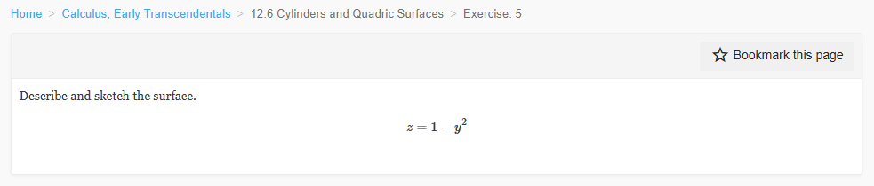
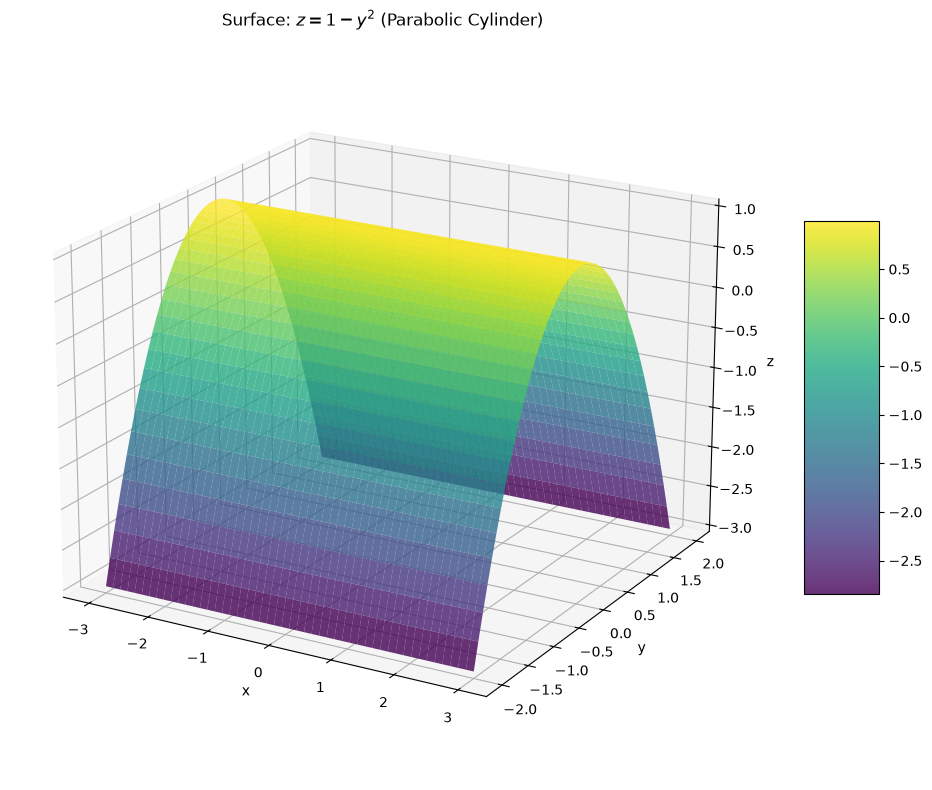
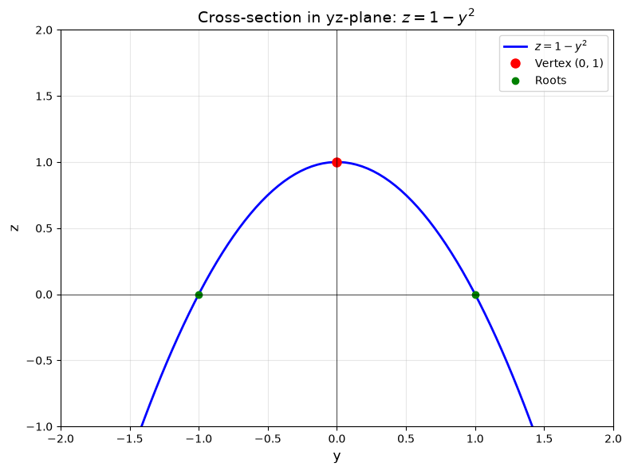
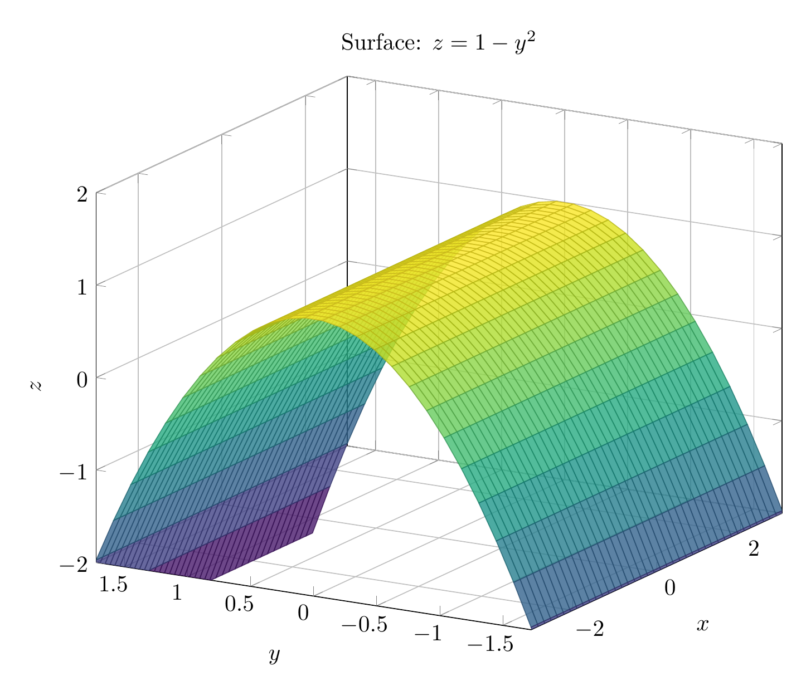
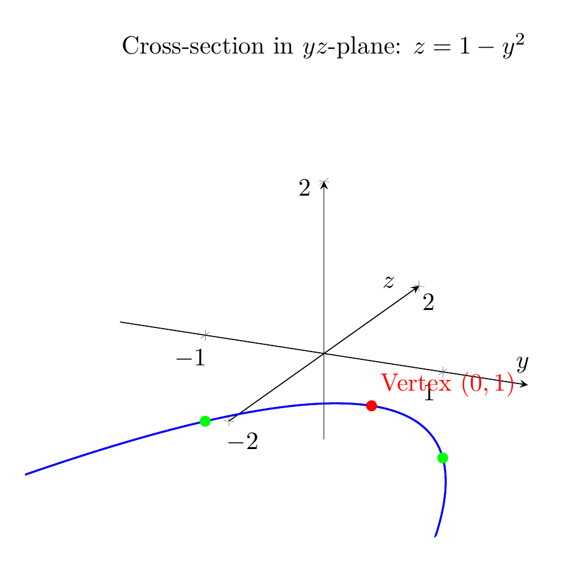

Path: mcma-Qwen3.5-397B-A17B/calculus-12.6.5/chat_20260823_213312_989344_utc_0800
Problem
Please solve the math problem in the image.

End of problem
Answer
# Surface Description: $z = 1 - y^2$
## Analysis
The equation $z = 1 - y^2$ describes a **parabolic cylinder**. Here's how to understand this surface:
### Key Characteristics
1. **Missing Variable**: Notice that the variable $x$ does not appear in the equation. This is the defining characteristic of a cylinder in 3D space. When one variable is missing from the equation, the surface extends infinitely in the direction of that missing variable.
2. **Cross-Section Analysis**:
- In the $yz$-plane (where $x = 0$), the equation becomes $z = 1 - y^2$, which is a **parabola** opening downward
- The vertex is at $(y, z) = (0, 1)$
- The parabola crosses the $y$-axis at $y = \pm 1$ (where $z = 0$)
3. **3D Structure**:
- Since $x$ is absent, this parabola is **extruded** (extended) infinitely in both directions along the $x$-axis
- Every cross-section parallel to the $yz$-plane (at any fixed $x$-value) gives the same parabola $z = 1 - y^2$
- The surface looks like a "trough" or "valley" that runs parallel to the $x$-axis
### Geometric Properties
- **Type**: Parabolic cylinder (a quadric surface)
- **Axis**: Parallel to the $x$-axis
- **Vertex line**: The line $(x, 0, 1)$ for all $x \in \mathbb{R}$ (the highest points of the surface)
- **Direction**: Opens downward in the $z$-direction
- **Symmetry**: Symmetric about the $xz$-plane (the plane $y = 0$)
## Sketch Description
The surface resembles an infinitely long gutter or trough:
- The "bottom" of the trough follows the parabola $z = 1 - y^2$
- The trough extends infinitely in both the positive and negative $x$-directions
- The highest points form a straight line at height $z = 1$ along the $x$-axis
- As you move away from $y = 0$ in either direction, the surface curves downward
This is a classic example of how a 2D curve (parabola) generates a 3D surface (cylinder) when extended along an axis perpendicular to its plane.
$\boxed{\text{Parabolic cylinder extending along the } x\text{-axis, with parabolic cross-section } z = 1 - y^2 \text{ in the } yz\text{-plane}}$
---


\documentclass[border=10pt]{standalone}
\usepackage{pgfplots}
\usepgfplotslibrary{colormaps}
\pgfplotsset{compat=1.18}
\begin{document}
\begin{tikzpicture}
\begin{axis}[
xlabel={$x$},
ylabel={$y$},
zlabel={$z$},
title={Surface: $z = 1 - y^2$},
view={-60}{20},
colormap/viridis,
grid=major,
width=12cm,
height=10cm,
zmin=-2,
zmax=2,
]
\addplot3[
surf,
domain=-3:3,
y domain=-2:2,
samples=40,
samples y=30,
opacity=0.8,
] {1 - y^2};
\end{axis}
\end{tikzpicture}
\end{document}

\documentclass[border=10pt]{standalone}
\usepackage{pgfplots}
\pgfplotsset{compat=1.18}
\begin{document}
\begin{tikzpicture}
\begin{axis}[
xlabel={$y$},
ylabel={$z$},
title={Cross-section in $yz$-plane: $z = 1 - y^2$},
domain=-2:2,
samples=100,
grid=major,
width=10cm,
height=8cm,
ymin=-2,
ymax=2,
zmin=-1,
zmax=2,
axis lines=center,
]
\addplot[blue, thick, domain=-2:2] {1 - x^2};
\addplot[red, only marks, mark=*] coordinates {(0,1)} node[above right] {Vertex $(0,1)$};
\addplot[green, only marks, mark=*] coordinates {(-1,0) (1,0)};
\end{axis}
\end{tikzpicture}
\end{document}

End of answer